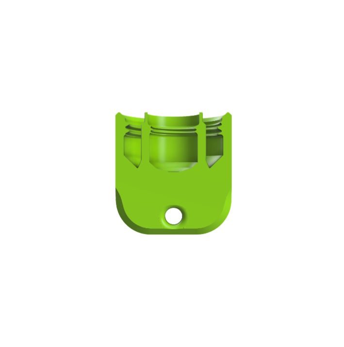
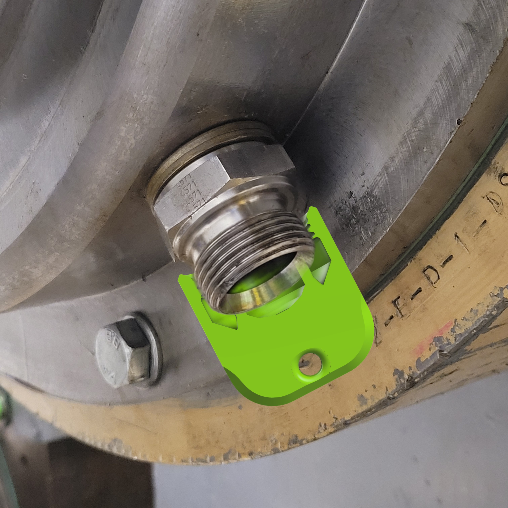

Projecten: Ontwerp tot Realiteit
Hybride Afdichtingsoplossing voor Lageronderhoud
De Uitdaging
Oude rubberen stoppen lekten regelmatig en pasten niet goed op de verschillende 1" en 3/8" aansluitingen. Dit veroorzaakte olievervuiling tijdens het wisselen van lagerblokken.
De Innovatie
Een universele dop met een slimme getrapte geometrie die beide diameters lekvrij afdicht. Het ontwerp is voorzien van een geïntegreerd oog voor een sleutelring, waardoor de doppen per lagerset bij elkaar worden opgeborgen en georganiseerd.
Materiaal & Resultaat
Geproduceerd in TPC voor optimale chemische resistentie en hittebestendigheid. Het resultaat is een sneller, schoner en veiliger onderhoudsproces.
Materiaal: TPC
3-Weg Slider Active


